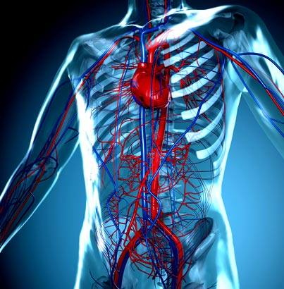

FCIH Hospital
Your Health Is Our Proiority
General Surgery
General surgery is a surgical specialty that focuses on abdominal
contents including esophagus,stomach, small bowel, colon, liver,
pancreas, gallbladder, appendix and bile ducts, and often the
thyroid gland (depending on local
referral patterns). They also deal with diseases involving the skin, breast, soft tissue, trauma,
peripheral vascular surgery and hernias and perform endoscopic
procedures such as gastroscopy and colonoscopy
General Surgery Contents
1.Laparoscopic surgery
This is a relatively new specialty dealing with minimal access techniques using cameras and small instruments inserted through 3 to 15mm incisions. Robotic surgery is now evolving from this concept (see below). Gallbladders, appendices, and colons can all be removed with this technique. Hernias are also able to be repaired laparoscopically. Bariatric surgery can be performed laparoscopically and there a benefits of doing so to reduce wound complications in obese patients. General surgeons that are trained today are expected to be proficient in laparoscopic procedures.
2.Colorectal surgery
General surgeons treat a wide variety of major and minor colon and rectal diseases including inflammatory bowel diseases (such as ulcerative colitis or Crohn's disease), diverticulitis, colon and rectal cancer, gastrointestinal bleeding and hemorrhoids.
3.Breast Surgrey
 General surgeons perform a majority of all non-cosmetic breast surgery from lumpectomy to mastectomy, especially pertaining to the evaluation, diagnosis and treatment of breast cancer.
General surgeons perform a majority of all non-cosmetic breast surgery from lumpectomy to mastectomy, especially pertaining to the evaluation, diagnosis and treatment of breast cancer.
4.Vascular surgery
 General surgeons can perform vascular surgery if they receive special training and certification in vascular surgery. Otherwise, these procedures are performed by vascular surgery specialists. However, general surgeons are capable of treating minor vascular disorders.
General surgeons can perform vascular surgery if they receive special training and certification in vascular surgery. Otherwise, these procedures are performed by vascular surgery specialists. However, general surgeons are capable of treating minor vascular disorders.
5.Endocrine surgery
 General surgeons are trained to remove all or part of the thyroid and parathyroid glands in the neck and the adrenal glands just above each kidney in the abdomen. In many communities, they are the only surgeon trained to do this. In communities that have a number of subspecialists, other subspecialty surgeons may assume responsibility for these procedures.
General surgeons are trained to remove all or part of the thyroid and parathyroid glands in the neck and the adrenal glands just above each kidney in the abdomen. In many communities, they are the only surgeon trained to do this. In communities that have a number of subspecialists, other subspecialty surgeons may assume responsibility for these procedures.
6.Transplant surgery
 Responsible for all aspects of pre-operative, operative, and post-operative care of abdominal organ transplant patients. Transplanted organs include liver, kidney, pancreas, and more rarely small bowel.
Responsible for all aspects of pre-operative, operative, and post-operative care of abdominal organ transplant patients. Transplanted organs include liver, kidney, pancreas, and more rarely small bowel.
7.Cardiothoracic surgery
 Most cardiothoracic surgeons in the U.S. (D.O. or M.D.) first complete a general surgery residency (typically 5–7 years), followed by a cardiothoracic surgery fellowship (typically 2–3 years
Most cardiothoracic surgeons in the U.S. (D.O. or M.D.) first complete a general surgery residency (typically 5–7 years), followed by a cardiothoracic surgery fellowship (typically 2–3 years
What is Endoscopic Surgery?
Endoscopic surgery uses scopes going through small incisions or natural body openings in order to diagnose and treat disease. Another popular term is minimally invasive surgery (MIS), which emphasizes that diagnosis and treatments can be done with reduced body cavity invasion.
Obesity Surgery
Obesity Surgery is the official journal of the International Federation for the Surgery of Obesity and metabolic disorders (IFSO). A journal for bariatric/metabolic surgeons, Obesity Surgery provides an international, interdisciplinary forum for communicating the latest research, surgical and laparoscopic techniques, for treatment of massive obesity and metabolic disorders. Topics covered include original research, clinical reports, current status, guidelines, historical notes, invited commentaries, letters to the editor, medicolegal issues, meeting abstracts, modern surgery/technical innovations, new concepts, reviews, scholarly presentations and opinions. Obesity Surgery benefits surgeons performing obesity/metabolic surgery, general surgeons and surgical residents, endoscopists, anesthetists, support staff, nurses, dietitians, psychiatrists, psychologists, plastic surgeons, internists including endocrinologists and diabetologists, nutritional scientists, and those dealing with eating disorders.
